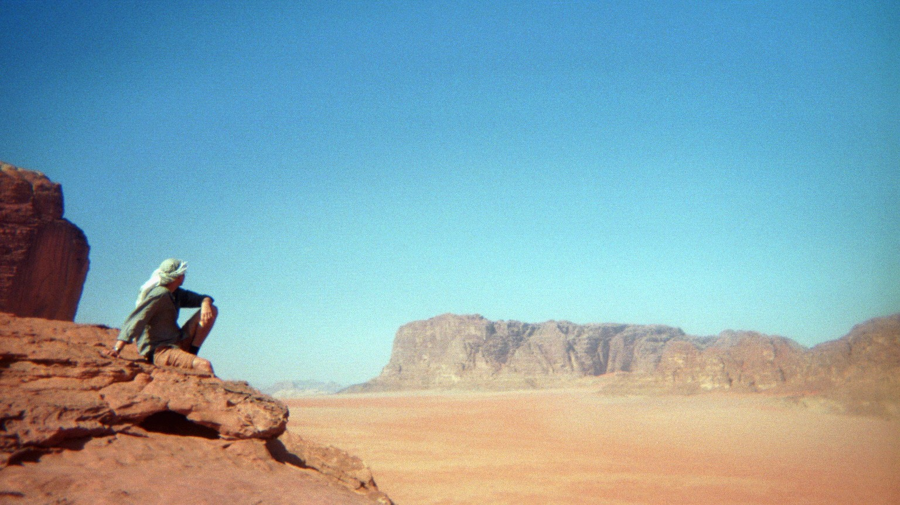

Heia, Lucas heiter eg!
Litt om meg: Eg er masterstudent i lingvistikk hjå UiO. Eg har òg studert arabisk og mellomausten-studiar.
Denne heimesida er til for å stella ut ting eg har skrive, eller for å syna fram ting eg har sansen for.
Wikipedia
Tekster
Klyngd (conlanging)
Helgelandsmåla er ei målføregruppe eg har stor interesse for. Her er ymse dialektavhandlingar og -innføringar som eg likar.
Sørhelgeland: Midthelgeland:Discord: singularitas
Bluesky: @singularitas.bsky.social